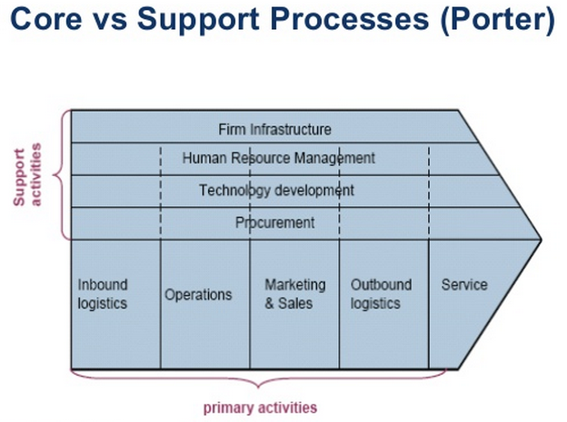

http://www.slideshare.net/marlondumas


Questions to ask about a process
-
What are the handoffs (it\'s not a process if there are not at least 2-3 handoffs)
-
What are the ways the process can go wrong
-
What are the ways the process can produce positive/negative outcomes
-
What value does the process deliver to the customer?
-
Who are the customers of the process?
-
What business processes are affected by a business rule change
Separate business rules from processes
Process reference frameworks:
ITIL = for it services
BPMCBOK = for project management
BPM advantages

-
Model business process
-
Understanding - Do we really know how work actually gets done?
-
Documentation - Is the intellectual capital embedded in our processes?
-
Innovation - Are we continuously improving org performance?
-
Manage business process
-
Control - Do we have control over the things that really matter?
-
Transparency - Are our operations suitably transparent and auditable?
-
Compliance - Are we meeting our obligations?
BPM relation to other methodologies like 6 sigma, TQM...
BPM is about managing and improving processes, whatever tools it takes to do so is most welcome.
General goals of a process
-
Reduce cost, faster delivery, better quality
-
Improve business process
-
Productivity - Are we making most of time and money?
-
Agility - Are we able to respond to demands and opportunities?
-
Satisfaction - Are customers and employees satisfied?

BPM lifecycle




Process Architecture

Business Process Modelling notation

Process Analysis
Qualitative Analysis
CMMI for services
CMMI ® (Capability Maturity Model ® Integration) models are collections of best practices that help organizations to improve their processes. The CMMI-SVC model provides guidance for applying CMMI best practices in a service provider organization. Best practices in the model focus on activities for providing quality services to customers and end users.
A Capability Maturity Model ® (CMM ® ), including CMMI, is a simplified representation of the world. CMMs contain the essential elements of effective processes.
The SEI has taken the process management premise, "the quality of a system or product is highly influenced by the quality of the process used to develop and maintain it," and defined CMMs that embody this premise.
The CMM Integration ® project was formed to sort out the problem of using multiple CMMs. The combination of selected models into a single improvement framework was intended for use by organizations in their pursuit of enterprise-wide process improvement. Developing a set of integrated models involved more than simply combining existing model materials. Using processes that promote consensus, the CMMI Product Team built a framework that accommodates multiple constellations.
The CMMI Framework provides the structure needed to produce CMMI models, training, and appraisal components. To allow the use of multiple models within the CMMI Framework, model components are classified as either common to all CMMI models or applicable to a specific model. The common material is called the "CMMI Model Foundation" or "CMF."
The components of the CMF are part of every model generated from the CMMI Framework. Those components are combined with material applicable to an area of interest (e.g., acquisition, development, services) to produce a model.
A "constellation" is defined as a collection of CMMI components that are used to construct models, training materials, and appraisal related documents for an area of interest (e.g., acquisition, development, services). The Services constellation's model is called "CMMI for Services" or "CMMI-SVC."
CMMI-SVC draws on concepts and practices from CMMI and other service focused standards and models, including the following:
-
Information Technology Infrastructure Library (ITIL)
-
ISO/IEC 20000: Information Technology---Service Management
-
Control Objectives for Information and related Technology (CobiT)
-
Information Technology Services Capability Maturity Model (ITSCMM)
The CMMI-SVC model covers the activities required to establish, deliver, and manage services. As defined in the CMMI context, a service is an intangible, non-storable product. The CMMI-SVC model has been developed to be compatible with this broad definition.
The Software Engineering Institute (SEI) has found several dimensions that an organization can focus on to improve its business.
Organizations typically focus on:
-
People
-
procedures and methods
-
tools and equipment

What holds everything together? It is the processes used in your organization. Processes allow you to align the way you do business. They allow you to address scalability and provide a way to incorporate knowledge of how to do things better. Processes allow you to leverage your resources and to examine business trends.
This is not to say that people and technology are not important. We are living in a world where technology is changing at an incredible speed. Similarly, people typically work for many companies throughout their careers. We live in a dynamic world. A focus on process provides the infrastructure and stability necessary to deal with an ever-changing world and to maximize the productivity of people and the use of technology to be competitive.
Problem solving
Y= f(x~1~,x~2~,x~3~...x~n~) = Builds an strategic alignment
Y=output/effect consists of smaller y's. Y is a function of multiple causes
x=causes
CCR = Critical customer requirements = translated from VOC into concrete requirements
Kano Model
Must be attributes are the expected attributes or "musts" of a product, and do not provide an opportunity for product differentiation. Increasing the performance of these attributes provides diminishing returns in terms of customer satisfaction, however the absence or poor performance of these attributes results in extreme customer dissatisfaction. Requirement that can dissatisfy, but cannot increase satisfaction.
Primary Satisfiers Performance attributes are those for which more is generally better, and will improve customer satisfaction. Conversely, an absent or weak performance attribute reduces customer satisfaction. Of the needs customers verbalise, most will fall into the category of performance attributes. These attributes will form the weighted needs against which product concepts will be evaluated.
The price for which customer is willing to pay for a product is closely tied to performance attributes. For example, customers would be willing to pay more for a car that provides them with better fuel economy.
Delighters Excitement attributes are unspoken and unexpected by customers but can result in high levels of customer satisfaction, however their absence does not lead to dissatisfaction. Excitement attributes often satisfy latent needs real needs of which customers are currently unaware. In a competitive marketplace where manufacturer products provide similar performance, providing excitement attributes that address unknown needs can provide a competitive advantage. Although they have followed the typical evolution to a performance then a threshold attribute, cup holders were initially excitement attributes. If the requirement is absent, it does not cause dissatisfaction, but it will delight clients if present
Other Attributes: Products often have attributes that cannot be classified according to the Kano Model. These attributes are often of little or no consequence to the customer, and do not factor into consumer decisions. An example of this type of attribute is a plate listing part numbers can be found under the hood on many vehicles for use by repairpersons
A relatively simple approach to applying the Kano Model Analysis is to ask customers two simple questions for each attribute (Satisfied, Neutral (should be that way), Dissatisfied, does not affect my satisfaction):
1. Rate your satisfaction if the product has this attribute?; and
2. Rate your satisfaction if the product did not have this attribute?
- Basic attributes generally receive the "Neutral" response to Question 1 and the Dissatisfied response to Question 2. Exclusion of these attributes in the product has the potential to severely impact the success of the product in the marketplace.
Eliminate or include performance or excitement attributes that their presence or absence respectively lead to customer dissatisfaction. This often requires a trade-off analysis against cost. As Customers frequently rate most attributes or functionality as important, asking the question How much extra would you be willing to pay for this attribute or more of this attribute? will aid in trade-off decisions, especially for performance attributes. Prioritisation matrices can be useful in determining which excitement attributes would provide the greatest returns on Customer satisfaction
Examples:
Must Be = Customer receives refund
Primary Satisfier (more is better) = Refund received within timeframe
Delighter = Receiving extra present ( discount for next purchase)


CTQ = Critical to quality
Use SIPOC for stakeholder analysis
Look for waste in processes (mark value-added, non-value added and value-added but necessary process steps)
Determine process capability
Data
-
Look at the distribution rather than only averages
-
Narrow range of distribution and reduce variation. Reduced variation = higher process stability
-
Look at defects rather than averages
-
Know the CCRs
-
At 6 Sigma the customer requirement is 6 standard deviations from the mean of the process output. If a process runs at 6 six sigma there are only 3.4 defects out of 1 million.

-
Measure performance against process capability
Process Improvement handbook
In simple terms, the primary difference between a process and a procedure is that a process is what you do and a procedure is how you do it.


Process Management is the ensemble of planning, engineering, improving, and monitoring an organization's processes in order to sustain organizational performance. It is a systematic approach to making an organization's workflow more effective, more efficient, and more capable of adapting to an ever-changing environment. A business process can be seen as a value chain or a set of activities that will be used to accomplish a specific organizational goal in order to meet customer requirements. Consequently, the goal of process management is to reduce human error and miscommunication in these processes and to focus stakeholders on improving their operating environment using Process Improvement methods.

http://www.acuityinstitute.com/design-for-six-sigma.html
DFSS

-
Quantify the gap between as is and target for each KPI (e.g. comparison of current market share with current product on the market with intended market share with new product in target market)
-
Weigh KPI goals according to strategic alignment Benefit estimation based on alternative project approaches by quantification of expected contribution to "closing the gap"
-
Evaluate occurrence probability, i.e. probability that the respective product and/or process innovation can contribute the expected contribution to "closing the gap"
-
Conduct cost estimate for each project approach by estimating the project expenses up to initial revenue receipt (alternatively: up to first positive contribution to margin or until Break Even is achieved)


Service Management

For all repeated services, a process is employed to carry out the service, and a set of service management processes is used to manage the service.
The expectations of the customer are defined primarily by context.
In evaluating service quality, measurements of customers' and stakeholders' satisfaction are the most important.
Service management is the management of a service to ensure that it meets the critical outcomes the customer values and the stakeholders want to provide. The execution of a service is the process of performing the task, whereas service management is the process of making sure that the task is performed according to expectations.
To optimize your outcome over time, you need to monitor customers' expectations on an ongoing basis; simply assuming that current service goals will remain static isn't good enough. The situation is dynamic, and when customers' expectations change, the service provider needs to recognize and respond to the changes.
To achieve this goal, measure both performance and desired outcomes. You can measure customers' expectations by conducting customer feedback surveys and by monitoring customer responses to changes in price or other factors that affect the delivery of services. Companies use a variety of traditional surveys and Web-based monitoring tools to measure sales and customer relationship effectiveness and to keep track of performance at many levels. You must measure service activities for aspects such as cost, duration, human effort, and quality. You also need to measure progress toward the outcomes that both the customer and the stakeholders had in mind when the service was established.
Process capability

For discussion purposes, we will assign a customer diameter specification of 0.5 ± 0.005 to the machined parts of Figure 2.3. The low specification is 0.495, and the high specification is 0.505.
A 1.33 capability ratio is the minimum required by most manufacturers and can easily be determined for the process using the following arithmetic:
Customer nominal = 0.5
Customer upper specification = 0.505
Customer lower specification = 0.495
Customer specification range is 0.01 total (0.505 -- 0.495)
Process is centered at 0.5
Variation = 0.006 total (UCL -- LCL; 0.503 -- 0.497)
Diameter Capability Ratio = Total Specification/Total Variation
Diameter Capability Ratio = 0.01/0.006
Diameter Capability Ratio = 1.66
The process is stable and capable with regard to the product characteristic "diameter."
Original idea originates from Ford quality manual for its suppliers:
The lower and upper specifications were what Ford was willing to accept, not desirable but acceptable.
-
Over the years, the suppliers had become accustomed to consuming the entire range of specification.
-
No process is safe from minor process average shifts due to occasional periods of instability.
-
Ford would receive under low and over high parts when a supplier's process was consuming the entire range of specification and minor instability was experienced. Out-of-specification parts would result in rejects if found at incoming inspection and slowed production if found on the assembly line.
-
If a supplier was consuming less than the entire specification and a minor shift in the average due to instability, there would be a better chance that under low and over high specification product would not be produced and shipped to Ford.
-
Therefore, beginning with the publication of Ford Q101, all suppliers were required to demonstrate their capability of providing Ford with product that consumed no more than 75% of the agreed-on specification when the product average was centered at nominal.
A process can be stable and yet not capable.
The full range of samples selected randomly from a production run does not necessarily represent the full range of measurements that will be found if all the product were to be measured.
Calculate total specification (range of variation) required to reach a capability rate of 1.33:
CR =Total Specification/Total Product Variation
CR (1.33 minimum) x Total Product Variation = Total Specification
1.33 x 0.04 (UCL 0.57-- LCL 0.53) = Total Specification
1.33 0.04 = 0.0532
0.0532 = Total Specification required to meet a 1.33 CR with the existing Total Product Variation.
Capability Index (Cpk) versus Capability Ratio (CR)
The Cpk is the same concept as the CR. The only difference is that we use Cpk when the product average is not the same as the customer nominal specification.
The arithmetic for CR develops one number such as 1.33 to describe the capability of the process. The arithmetic for Cpk develops two numbers:

-
The capability index for lower specification (CPL) describes the capability of the process in relation to the lower specification.
-
The capability index for upper specification (CPU) describes the capability of the process in relation to the upper specification.
-
One number, the lower number of CPL and CPU, is used to describe the capability of the process, and it is termed Cpk.
The question for management now becomes how to determine the Cpk when the average is not on nominal while maintaining the industry standard minimum Cpk of 1.33.
The answer is rather simple. Because the center of the normal curve will no longer be on the nominal, the distance between product average and the lower and upper specifications will no longer be equal. If the distances are not equal, we now have two numbers to describe the capability of the process. These numbers will take into account:
-
The customer's lower specification, nominal, and upper specification
-
The product average
-
The amount of wall thickness variation about the product average
One number will describe the distance from the low end of the product variation to the lower specification, and the other number will describe the distance from the high end of the product variation to the upper specification. These numbers are called the CPL and the CPU.
Convention mandates that if either one of these two numbers is less than 1.33, we cannot call the process capable.
If management decided to change the SOP and place the wall thickness average at 0.26, the arithmetic to determine the CPL and the CPU would be as follows:
CPL = Product Average -- Lower Specification ÷ ½ Total Variation
CPL = (0.26 -- 0.255) ÷ ½ × (0.006)
CPL = 0.005 ÷ 0.003
CPL = 1.66
CPU = Upper Specification -- Product Average ÷ ½ Total Variation
CPU = (0.285 -- 0.260) ÷ ½ × (0.006)
CPU = 0.025 ÷ 0.003
CPU = 8.33

Generally speaking, product problems on the shop floor or at the customer or supplier fall into one of two categories. The problem can be one of instability or of incapability. Specifically, the problem exists because the product average has shifted or because the product has too much variation about a consistent average.
The purpose of a process capability study is to determine if the manufacturing process is stable and capable by measuring the critical product characteristic of interest. The product measurements are then used to develop a statistical product control chart. By analyzing the data patterns on the control chart, we determine if the process is stable. If the process is stable, we then use the data to determine a Cpk value in order to determine the degree of capability.
It is impossible to determine if a manufacturing process is stable if the measurement process used to measure the product is not stable. This is because an unstable measurement process will make a perfectly stable manufacturing process appear to be unstable. Unfortunately, unstable measurement processes in manufacturing are common.
Six Sigma
http://lean-six-sigma.pro/Documents/Explaining%20sigma%20shift%20v2.pdf
http://www.isixsigma.com/new-to-six-sigma/dmaic/scientific-problem-solving-dmaic-terms-y-fx/

A Six Sigma project is successful when the team is able to solve Y = f(x).That is, relate all the key inputs to each expected output within a small magnitude of error